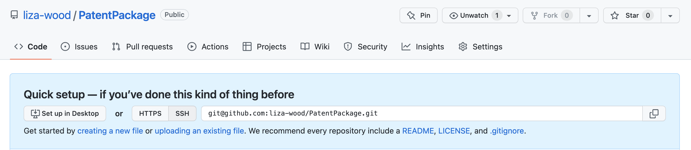

Create a package
Note: This tutoial is derived from Fong Chun Chan’s Blog
0.0.1 Setting up
First, make sure you have the two packages we’ll need to build a package:
library(roxygen2)
library(devtools)In an empty project in RStudio, use devtools function to build you a package template, putting your package name in quotation marks:
devtools::create("PatentPackage")This template includes a couple bits, the two we’ll focus on first are the DESCRIPTION page and the R/ folder. In the DESCRIPTION folder there is a template for package information. Devtools makes it easy for you to just fill in the prompts. I’ve also added
Package: PatentPackage
Title: Reads In US Patent Data
Version: 0.0.0.9000
Authors@R:
person("Liza", "Wood", , "belwood@ucdavis.edu", role = c("aut", "cre"))
Description: Here I will describe what this package does
License: `use_mit_license()`, `use_gpl3_license()` or friends to pick a
license
Encoding: UTF-8
Roxygen: list(markdown = TRUE)
RoxygenNote: 7.2.1
Imports:
lubridate
Depends:
R (>= 2.10)0.0.2 Writing and annotating your function(s)
Inside the R/ folder is there the functions will go. Open up an R script and paste in your function. This is our function from last week:
read_patents <- function(file_dir){
patents <- do.call("rbind",
lapply(list.files(file_dir, full.names = T),
function(x){
df <- read.csv(x)
df$App_Date <- ymd(as.character(df$App_Date))
df$Issue_Date <- ymd(as.character(df$Issue_Date))
return(df)}))
return(patents)
}We also need to add documentation so that we can have a help file for our function. We do this using roxygen2 notation by start lines with the #' symbols and adding in certain notation arguments, which starts with @ signs. The basics are described in the roxygen2 vigenette. For instance:
#' Read US Patent Documentation
#'
#' Reads in csv files generates by the `patentr` package which downloans US patent
#' records by the week, alters their date columns to date formats, then binds them
#' into one data frame.
#'
#' @param file_dir Folder where USPTO csv files are stored, downloaded via `patentr` package
#'
#' @return A data frame of patents binded together
#'
#' @examples patents <- read_patents(file_dir = "patent_files/")
#'
#' @import lubridate
#'
#' @exportInclude the notation at the start of your script, above the function. Then save your R scripts as the name of your function inside the R folder. Make sure you are in your Rproject, then to update your function documentation, run:
devtools::document()This generates a man/ folder that stores the documenation.
0.0.3 Making your package available
Now we want to link your package to a GitHub repository. In GitHub, create a new repository with your package name, with no other templates. It should then appear as below.

Then inside your empty RStudio space that you have been building the package, link the local project to the GitHub repository using the following lines in the Terminal, replacing the GitHub repo directory with the link to your directory.
git init
git add .
git commit -m "Setting up package to GitHub"
git remote add origin https://github.com/liza-wood/PatentPackage
git push -u -f origin masterNow this package lives on GitHub: https://github.com/liza-wood/PatentPackage. Which also means we can all use it now by installing it from GitHub:
devtools::install_github("liza-wood/PatentPackage")## Skipping install of 'PatentPackage' from a github remote, the SHA1 (1475555a) has not changed since last install.
## Use `force = TRUE` to force installationlibrary(PatentPackage)
?read_patents()And you can download the data stored in this workshop repository, the patents for 52 weeks from 1977, to trial the function. First download the data here:
Then give it a try once you’ve installed the package:
patents <- read_patents("data/")## Warning: 1 failed to parse.head(patents)## WKU Title App_Date Issue_Date
## 1 D02428814 Diver s helmet 1975-09-08 1977-01-04
## 2 D02428822 Combined brush and ice scraper 1976-04-21 1977-01-04
## 3 D02428830 Toothbrush 1975-09-17 1977-01-04
## 4 D02428849 Stand for potted plants 1976-01-07 1977-01-04
## 5 D02428857 Chair 1975-08-18 1977-01-04
## 6 D02428865 Seat or similar article 1975-06-02 1977-01-04
## Inventor Assignee ICL_Class
## 1 Richard F. Jones General Aquadyne, Inc. D0203
## 2 Otto W. Schneider Erwin Weller Company D0401;D0705
## 3 Thomas J. De Marco D0402;D2402
## 4 Peter Diaz Lawrence Peska Associates, Inc. D0604
## 5 Lee Harold Fister, Jr. D0601
## 6 Taylor M. Potter D0601
## References
## 1 3845768;3943571
## 2 D184943;D228585;2856621;2981964;3017649
## 3 D56858;1209789;2677843;3677264
## 4 D137106;D165328;1406893
## 5
## 6 D49656;D219583;D227834;D234171;D237923;3563599
## Claims
## 1 The ornamental design for a diver s helmet, as shown.
## 2 The ornamental design for a combined brush and ice scraper, or the like,substantially as shown and described.
## 3 The ornamental design for a toothbrush, substantially as shown anddescribed.
## 4 The ornamental design for a stand for potted plants, substantially asshown.
## 5 The ornamental design for a chair, as shown.
## 6 The ornamental design for a seat or similar article, as shown.